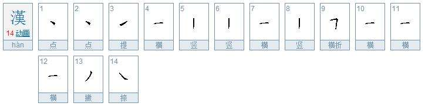

Level(1) Study
漢
Explanation: Han is a difficult concept which requires an understanding of the context in which it is used. Han is frequently translated as sorrow, spite, rancor, regret, resentment or grief, among many other attempts to explain a concept that has no English equivalent. Han is an inherent characteristic of the Korean character and as such finds expression, implied or explicit, in nearly every aspect of Korean life and culture.
